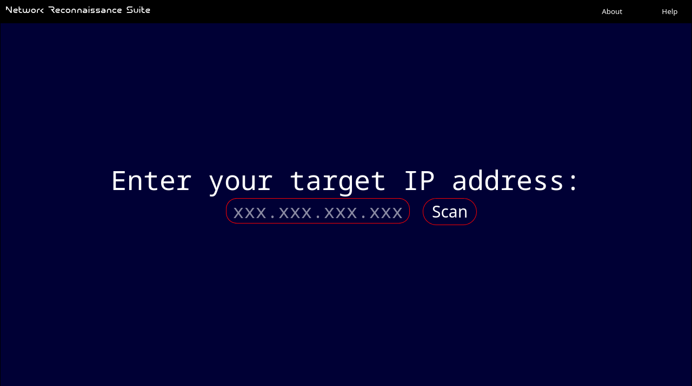
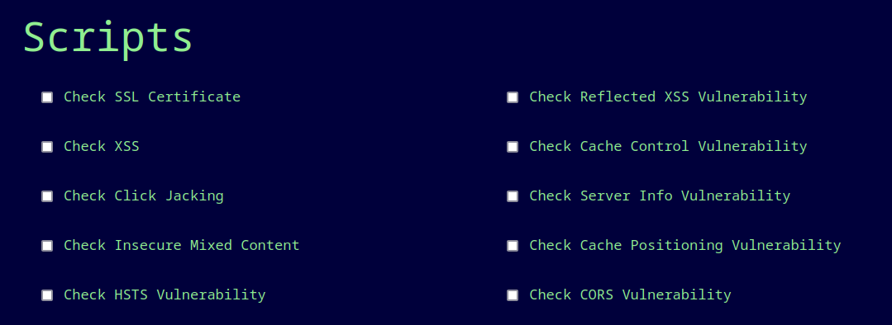

Network
Reconnaissance
Suite
-> Start <-

Scared of attacks?
Scan your server and detect vulnerabilities early.
Easily distinguish between open and closed ports with the color coded output screen.

Easily run scripts to deepen your search.